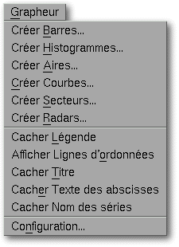

<!-- Documentation XQuad (c)1995-2000 AXENE contact axene@axene.org>
<html>

<head>
<title>Graph Menu</title>
</head>

<body BGCOLOR="#FFFFFF" BACKGROUND="Images/back.gif" TEXT="#000000">

<p ALIGN="right">  </p>

<p><br>
The <i>Graph</i> pulldown menu houses all commands required for chart creation and
configuration.<br>
<br>
</p>

<hr>

<p align="center"><br>
 <br>
<small><i>Screen snap: Graph pulldown menu</i></small></p>

<p><br>
</p>

<hr>

<p><br>
</p>

<h3>The Graph menu contains the following options:</h3>

<ul>
  <li><a NAME="hbars_menu_entry">&quot;<i>Create Horizontal Bars...</i>&quot; <b>create a
    chart with bars</b> A bar graph represents values using horizontal bars. The Y-axis of the
    graph is divided equally between the various series, and each series section is subdivided
    equally for each value. The bar graph legend displays a color for each value of the
    series.</a><br>
    &nbsp;</li>
  <li><a NAME="vbars_menu_entry">&quot;<i>Create Vertical Bars...</i>&quot; <b>create a
    histogram chart</b>. A histogram represents values using vertical bars. The X-axis of the
    graph is divided equally between the various series, and each series section is subdivided
    equally for each value. The histogram legend displays a color for each value of the
    series.</a><br>
    &nbsp;</li>
  <li><a NAME="areas_menu_entry">&quot;<i>Create Layers...</i>&quot; <b>create a chart with
    layers</b>. An layer graph represents values using a two dimensional surface area for each
    series. The X-axis is equally divided between the various series values. The layer graph
    legend displays a color for each value of the series. These values are added to
    corresponding values of preceding series before being reported in the graph.</a><br>
    &nbsp;</li>
  <li><a NAME="curves_menu_entry">&quot;<i>Create Lines...</i>&quot; <b>create a chart with
    curves</b>. A line graph represents values using a two dimensional line each series. The
    X-axis is divided equally between the various series values. The line graph legend
    displays a color for each value of the series.</a><br>
    &nbsp;</li>
  <li><a NAME="pies_menu_entry">&quot;<i>Create Pie...</i>&quot; <b>create a chart with
    sectors</b>. Pie graphs represent values using angular sections of a circle for each
    series. Each disc is divided into positive values above zero (zero and negative values are
    not included). Each section is identified by its color and the amount of space it occupies
    on the disc. A pie graph legend displays a color for each value of the series. A pie graph
    has no Y-axis.</a><br>
    &nbsp;</li>
  <li><a NAME="radars_menu_entry">&quot;<i>Create Radar Chart...</i>&quot; <b>create a radar
    chart</b>. A radar graph represents values using two dimensional polar lines resembling a
    radar antenna. For each X-value a line extends forth from a central point, equally spaced
    from other lines. Each series value is reported on corresponding axes, creating a colored
    line between the axes. The radar graph legend displays a color for each series.</a></li>
</ul>

<p>The menu entries in this section fulfill two roles: creation of framed graphs based
upon data from selected cells, or alteration of a selected graph. The function of these
entries therefore depends on what is selected: worksheet cells or a frame containing a
graph. When one of these entries creates a new graph, XQuad shifts to <a
HREF="HBar_Graphics.html#rectangle_frame_icon">frame creation mode</a>; once defined this
frame will contain the new graph. If XQuad cannot determine the <a
HREF="Box_GraphSetup.html#geometry">source cell region</a>, the &quot;<a
HREF="Box_GraphSetup.html">Graph Configuration</a>&quot; dialog box is automatically
opened. 

<ul>
  <li><a NAME="legend_menu_entry">&quot;<i>Display/Hide Legend</i>&quot; <b>activate or
    deactivate the drawing of a chart's legends</b>. Depending upon chart type the legend can
    be displayed or hidden if series or X-axis titles exist.</a><br>
    &nbsp;</li>
  <li><a NAME="y_axes_menu_entry">&quot;<i>Display/Hide Y-Axis Marks</i>&quot; <b>activate or
    deactivate the drawing of a chart's vertical axis marks</b>. This entry can be applied to
    all charts types except pie graphs. Y-axis lines will be extended across the entire width
    of the chart.</a><br>
    &nbsp;</li>
  <li><a NAME="graph_name_menu_entry">&quot;<i>Display/Hide Chart Title</i>&quot; <b>activate
    or deactivate the drawing of a chart's title</b>. A chart title exists only if series
    titles and X-axis titles exist.</a><br>
    &nbsp;</li>
  <li><a NAME="absc_name_menu_entry">&quot;<i>Display/Hide X-Axis labels</i>&quot; <b>activate
    or deactivate the drawing of a chart's horizontal axis labels</b>. X-axis titles only
    exist when the </a><a HREF="Box_GraphSetup.html#absc_label_button">third button</a> of the
    graph configuration dialog box is engaged.<br>
    &nbsp;</li>
  <li><a NAME="series_name_menu_entry">&quot;<i>Display/Hide Series Names</i>&quot; <b>activate
    or deactivate the drawing of a chart's series names</b>. Series titles only exist when the
    </a><a HREF="Box_GraphSetup.html#legend_button">fifth button</a> of the chart
    configuration dialog box is engaged.<br>
    &nbsp;</li>
  <li><a NAME="setup_menu_entry">&quot;<i>Configuration...</i>&quot; <b>change the area of
    cell regions which are the source of values reported in the graph</b>. It will open the '</a><a
    HREF="Box_GraphSetup.html">graph configuration</a>' dialog box.</li>
</ul>

<p><br>
</p>

<hr>

<p ALIGN="right"></p>
</body>
</html>
